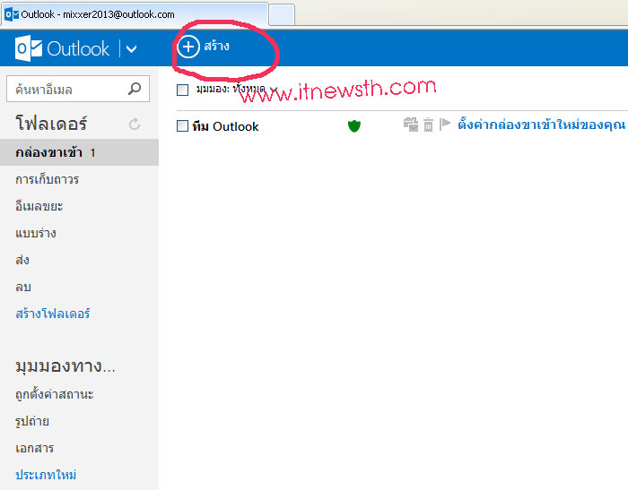
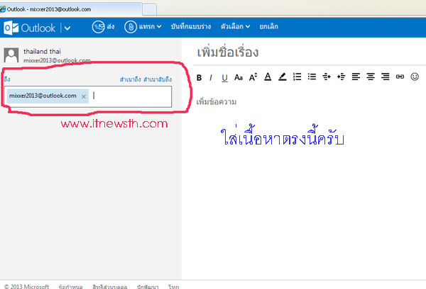

หน่วยที่ 10 การรับส่งไปรษณีย์อิเล็คทรอนิคส์
คำศัพท์ทั่ว ๆ ไป ที่มักจะนิยมใช้ในการใช้งานอีเมล์ มีดังนี้
- Inbox หมายถึงกล่องหรือที่สำหรับเก็บอีเมล์ ที่มีผู้ส่งเข้ามา
- Outbox หมายถึงกล่องหรือที่เก็บอีเมล์ ที่กำลังจะส่งออกไปหาผู้อื่น
- Sent Items หมายถึงกล่องหรือที่เก็บอีเมล์ ที่เราได้เคยส่งออกไปหาผู้อื่นแล้ว
- Delete Items หมายถึงกล่องหรือที่เก็บอีเมล์ ที่ได้ทำการลบทิ้งจาก Inbox แต่ยังเก็บสำรองไว้อยู่
- Drafts หมายถึงกล่องหรือที่เก็บอีเมล์ สำหรับใช้เก็บอีเมล์ต่างๆชั่วคราว ซึ่งอาจจะมีหรือไม่มีก็ได้
- Compose หรือ New Mail จะเป็นการส่งอีเมล์ใหม่ ไปหาผู้อื่น
- Forward การส่งต่ออีเมล์ ที่ได้รับมานั้นไปหาผู้อื่น
- Reply การตอบอีเมล์ ที่มีผู้ส่งมาถึงเรา
- Reply All การตอบอีเมล์ ที่มีผู้ส่งมาถึงเรา และส่งกลับไปให้ทุกคนที่มีชื่ออยู่ในอีเมล์ฉบับนั้น
- Subject หมายถึงหัวข้อของอีเมล์ที่เราจะเขียนหรือส่งออกไป
- To หมายถึงชื่อหรืออีเมล์ ของผู้ที่เราต้องการส่งอีเมล์ไปหา
- CC หมายถึงการส่ง copy อีเมล์นั้น ๆ ไปให้ผู้อื่นที่ต้องการด้วย
- BCC หมายถึงการส่ง copy อีเมล์นั้น ๆ ไปให้ผู้อื่นที่ต้องการ และไม่ให้ผู้รับคนอื่นมองเห็นว่า มีการส่งไปให้ในช่อง BCC ด้วย
- Attach หมายถึง การแนบไฟล์เอกสาร หรือโปรแกรมต่างๆ ไปกับอีเมล์ฉบับนั้น
- Address Book หมายถึงสมุดรายชื่ออีเมล์ต่างๆ ที่เราสามารถเก็บไว้ เพื่อให้นำมาใช้งานได้ง่ายขึ้น
การรับและเปิดอ่านไปรษณีย์อิเล็คทรอนิคส์
- เข้าสู่เว็บไซต์
- ทำการกรอกชื่อ email และ password ในช่องให้ถูกต้อง จากนั้นกดปุ่ม Sign in

- จากทำการล็อกอิน เข้าใช้งาน hotmailเรียบร้อยแล้ว จะปรากฎหน้าจอหลักของระบบอีเมล์ดังรูป

- การเข้าทำการตรวจเช็คอีเมล์สามารถคลิ๊กไปที่ ชื่อผู้ส่ง ในหน้า Inbox ได้เลย โดยจะปรากฎหน้าจอรายละเอียดของอีเมล์ที่ส่งมาทั้งหมด ไม่ว่าจะเป็นตัวหนังสือข้อความ หรือ ไฟล์แนบต่าง ๆ

ที่มา http://www.สมัครอีเมล์..com/
การส่งไปรษณีย์อิเล็คทรอนิคส์
- เข้าสู่เว็บไซต์
- ทำการกรอกชื่อ email และ password ในช่องให้ถูกต้อง จากนั้นกดปุ่ม Sign in
- จากทำการล็อกอิน เข้าใช้งาน hotmailเรียบร้อยแล้ว จะปรากฎหน้าจอหลักของระบบอีเมล์ดังรูป
- จากนั้นก็เข้าไปยัง สร้าง เครื่องหมาย (+) ลงไป แล้วให้ใส่ อีเมล์ของผู้รับลงไป ไม่ว่าจะเป็น อีเมล์ของ gmail , hotmail , windowslive.com , outlook.com , yahoo.com ส่งอีเมล์ ถึงกันได้หมดครับ
- สร้างจดหมายเสร็จก็ใส่ที่อยู่ “อีเมล์ ผู้รับ” จดหมายได้เลย แล้วใส่รายละเอียดข้อมูลลงไป ในช่อง “เพิ่มข้อความ” ตามต้องการ
